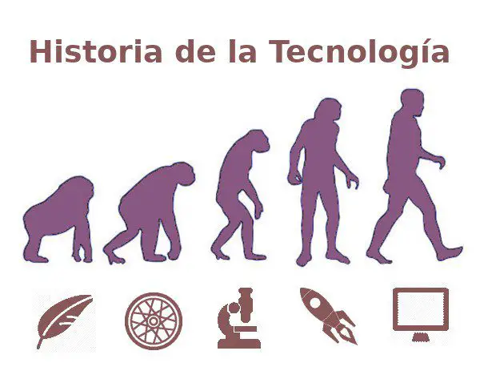

Durante el Neolítico se produjo una auténtica evolución social y tecnológica. Esto fue debido, entre otras cosas, al cambio climático, el cual implicó unas condiciones más benignas para la vida y posibilitó adoptar una vida sedentaria, dedicándose a la ganadería y agricultura en lugar de a la caza y pesca. Esto les permitió desarrollar técnicas agrícolas y ganaderas para facilitar su supervivencia. Durante esta época los principales cultivos eran el trigo y la cebada.
En la época romana al cultivo de trigo y cebada se unió el de la vid y el olivo. Se desarrolló la prensa de aceite y las técnicas de abono y regadío. En la Edad de los Metales la agricultura experimentó un desarrollo espectacular en los diversos sistemas de riego que surgieron: se encauzan las aguas de riego, se drenan los excedentes y se construyen depósitos de reserva. Se incluye el sistema de riego por acequia y el arado de tracción animal. Durante la Edad Media se desarrollaron las técnicas agrícolas, siendo de vital importancia el arado de vertedera fija tirado por bueyes. Inventos como la collera que permitía utilizar caballos como animales de tiro o la guadaña, que vino a sustituir a la hoz. Se utilizaron nuevas técnicas agrícolas como la rotación de cultivos y barbecho o el abonado de los campos, práctica usual a partir del siglo XII. Los árabes introdujeron nuevas técnicas de regadío y la generalización de las huertas.
A partir de 1500 con el descubrimiento de América se globaliza la agricultura y se introducen nuevos cultivos como la patata, la caña de azúcar, el maíz o el café. Durante el siglo XX se introdujeron los abonos químicos y se especializó la agricultura, produciéndose un salto importante debido a la biotecnología, la ingeniería y el uso de semillas de alto rendimiento.
